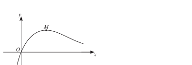

2.6 Numerical solution of equations
Roots · sign changes · fixed-point iteration · accuracy
本页依据 9709 Mathematics 2026–2027 syllabus 2.6：通过 graphical considerations 或 sign change 定位 root；理解 convergent sequence of approximations；由 equation 推出给定的 fixed-point iteration x_{n+1}=F(x_n)，并用 iteration 求 root 到指定 accuracy。考纲不要求 convergence condition 的理论证明，但要知道 iteration 可能 fail to converge。
知识点依据 Note/P2 的 Numerical Methods PDF；worked examples 使用工作区中已经独立提取的相关原始图片，每个例题单独成卡。真题全部来自本地 Paper 2 原始 PDF，题干只把 PDF 排版规范为 LaTeX，没有改写或编造题目。
1. Core knowledge
Root and sign change
若 f 在 [a,b] 上 continuous，且
f(a)f(b)<0,
则 [a,b] 内至少有一个 root。题目若说该区间只有一个 root，sign change 就能把它定位在这两个 endpoints 之间。
图像题要先明确比较的是哪两个 functions，并检查交点数量；“有 sign change”本身不能证明区间内只有一个 root。
Worked example · Numerical Methods note p.3

Worked example · Numerical Methods note p.4

Fixed-point iteration
若 equation rearranged 为
x=F(x),
则从给定的 x_1 或 initial value 开始，反复计算
x_{n+1}=F(x_n).
如果 sequence converges to \alpha，则取 limit 得 \alpha=F(\alpha)，所以 limit 是原 equation 的 root；但必须结合题目给出的 root uniqueness 或区间信息来确定它是所求 root。
Worked example · Numerical Methods note p.5

Worked example · Numerical Methods note p.7

Accuracy and iteration table
保留比最终要求更多的 intermediate figures，直到 consecutive iterates round 到同一个答案。例如要求 3 significant figures 时，不能过早把每一步都 round 到 3 s.f.。
题目若要求“each iteration to 5 significant figures”，表格中按要求显示，但判断 convergence 时使用未过早舍入的 values。
Worked example · Numerical Methods note p.8

Worked example · Numerical Methods note p.10

Worked example · Numerical Methods note p.11

Worked example · Numerical Methods note p.12

Choosing and checking an iteration
同一个 equation 往往可以 rearrange 成不同的 x=F(x)。应选择题目指定的 formula，或选择在目标区间内数值变化较稳定的形式；不同 rearrangement 可能收敛到不同 roots，也可能 diverge。
若 x_n\to\alpha，则 \alpha=F(\alpha)，但这只是必要条件。实际做题要观察 consecutive iterates 是否稳定，并结合 sign change、graph 或题目给出的 root interval 确认 root。
Accuracy and reporting
如果答案要 correct to k significant figures，至少保留多一至两位 guard figures 进行后续 iteration。可以在 consecutive iterates 四舍五入后相同，或两次结果的差小于所需 rounding tolerance 时停止；最后只对最终答案按题目要求取舍入。
若题目要求显示每一步 iteration，表格应列出 n、x_n 和指定的 decimal places/significant figures，并保持同一格式。
2. Verified Paper 2 past-paper questions
以下 5 组题均已在本地 Paper 2 原始 PDF 及对应 mark scheme 中核对；题目没有因为数量不足而补造。
Question 1 · 9709/21/O/N/20 Q5(a–b)
The sequence of values given by the iterative formula
x_{n+1}=\frac{6+8x_n}{8+x_n^2}
with initial value x_1=2 converges to \alpha.
Use the iterative formula to find the value of \alpha correct to 4 significant figures. Give the result of each iteration to 6 significant figures.
State an equation satisfied by \alpha and hence determine the exact value of \alpha. [3+2]
Show detailed mark scheme answer
- Starting with x_1=2:
\begin{array}{c|c} n&x_n\\\hline 1&2.00000\\ 2&1.83333\\ 3&1.81907\\ 4&1.81736\\ 5&1.81715\\ 6&1.81712\\ 7&1.81712 \end{array}
The iterates stabilise to 4 significant figures, so
\boxed{\alpha=1.817}.
- At the limit, x_{n+1}=x_n=\alpha:
\alpha=\frac{6+8\alpha}{8+\alpha^2}.
Thus
\alpha(8+\alpha^2)=6+8\alpha \quad\Longrightarrow\quad \alpha^3=6.
The convergent sequence is positive, so
\boxed{\alpha=\sqrt[3]{6}}.PastPaper/2020/2020/9709_w20_qp_21.pdf, Q5(a–b), and matching mark scheme.
Question 2 · 9709/21/M/J/22 Q5(a–d)
The equation
|5-2x|=3\ln x
has exactly two roots.
By sketching the graphs of y=|5-2x| and y=3\ln x on the same diagram, show that the equation has exactly two roots. [3]
Show that the value of the larger root satisfies the equation
x=2.5+1.5\ln x.
Show by calculation that the value of the larger root lies between 4.5 and 5.0.
Use an iterative formula, based on the equation in part (b), to find the value of the larger root correct to 3 significant figures. Give the result of each iteration to 5 significant figures. [1+2+3]
Show detailed mark scheme answer
The logarithm requires x>0. The graph of y=|5-2x| is V-shaped, with vertex (2.5,0); y=3\ln x is increasing and concave down. The two branches of the V give one intersection for 0<x<2.5 and one for x>2.5, so there are exactly two roots.
The larger root is greater than 2.5, so |5-2x|=2x-5. Hence
2x-5=3\ln x \quad\Longrightarrow\quad \boxed{x=2.5+1.5\ln x}.
- Let F(x)=2.5+1.5\ln x. Then
F(4.5)=4.7561\ldots>4.5, \qquad F(5.0)=4.9148\ldots<5.0.
Equivalently, the sign changes across the rearranged equation show that the larger root lies in
\boxed{4.5<x<5.0}.
- Use x_{n+1}=2.5+1.5\ln x_n, starting with x_1=4.5:
\begin{array}{c|c} n&x_n\\\hline 1&4.5000\\ 2&4.75612\\ 3&4.83915\\ 4&4.86511\\ 5&4.87313\\ 6&4.87561\\ 7&4.87637\\ 8&4.87660 \end{array}
Therefore the larger root is
\boxed{x=4.88}\qquad\text{(3 s.f.)}.PastPaper/2022/2022/9709_s22_qp_21.pdf, Q5(a–d), and matching mark scheme.
Question 3 · 9709/21/M/J/24 Q5(a–c)
A curve has equation
y=\frac{1+e^{2x}}{1+3x}.
The curve has exactly one stationary point P.
- Find dy/dx and hence show that the x-coordinate of P satisfies the equation
x=\frac16+\frac12e^{-2x}.
Show by calculation that the x-coordinate of P lies between 0.35 and 0.45.
Use an iterative formula based on the equation in part (a) to find the x-coordinate of P correct to 3 significant figures. Give the result of each iteration to 5 significant figures. [4+2+3]
Show detailed mark scheme answer
- By the quotient rule,
\frac{dy}{dx}=\frac{(1+3x)2e^{2x}-(1+e^{2x})3}{(1+3x)^2}.
At a stationary point the numerator is zero:
2e^{2x}+6xe^{2x}-3-3e^{2x}=0,
so
e^{2x}(6x-1)=3 \quad\Longrightarrow\quad x=\frac16+\frac12e^{-2x}.
- Let G(x)=\dfrac16+\dfrac12e^{-2x}. Then
G(0.35)=0.4149\ldots>0.35, \qquad G(0.45)=0.3700\ldots<0.45,
which brackets the stationary-point coordinate in the stated interval.
- Starting with x_1=0.40000 and using x_{n+1}=G(x_n):
\begin{array}{c|c} n&x_n\\\hline 1&0.40000\\ 2&0.39133\\ 3&0.39526\\ 4&0.39347\\ 5&0.39428\\ 6&0.39391\\ 7&0.39408\\ 8&0.39401 \end{array}
Thus
\boxed{x=0.394}\qquad\text{(3 s.f.)}.PastPaper/2024/2024/qp-202406-mathematics-p21.pdf, Q5(a–c), and matching mark scheme.
Question 4 · 9709/22/M/J/24 Q6(a–d)
The curve with equation
y=\frac{\ln(2x+1)}{x+3}
has a maximum point M.

Find an expression for \dfrac{dy}{dx}. [2]
Show that the x-coordinate of M satisfies the equation
x=\frac{x+3}{\ln(2x+1)}-0.5.
Show by calculation that the x-coordinate of M lies between 2.5 and 3.0.
Use an iterative formula based on the equation in part (b) to find the x-coordinate of M correct to 4 significant figures. Give the result of each iteration to 6 significant figures. [2+2+3]
Show detailed mark scheme answer
- Using the quotient rule,
\frac{dy}{dx} =\frac{\dfrac{2(x+3)}{2x+1}-\ln(2x+1)}{(x+3)^2} =\boxed{\frac{\dfrac{2(x+3)}{2x+1}-\ln(2x+1)}{(x+3)^2}}.
- Differentiating by the quotient rule gives
\frac{dy}{dx}=\frac{\dfrac{2(x+3)}{2x+1}-\ln(2x+1)}{(x+3)^2}.
At the maximum point, dy/dx=0, so
\frac{2(x+3)}{2x+1}=\ln(2x+1).
Rearranging gives
\boxed{x=\frac{x+3}{\ln(2x+1)}-0.5}.
- Using the fixed-point function
F(x)=\frac{x+3}{\ln(2x+1)}-0.5,
we find
F(2.5)=2.5696\ldots>2.5, \qquad F(3.0)=2.5834\ldots<3.0,
so the root lies between 2.5 and 3.0.
- Starting with x_1=2.75000 and using x_{n+1}=F(x_n) gives a convergent sequence:
\begin{array}{c|c} n&x_n\\\hline 1&2.75000\\ 2&2.57191\\ 3&2.56917\\ 4&2.56917 \end{array}
Therefore, to 4 significant figures,
\boxed{x=2.569}.PastPaper/2024/2024/qp-202406-mathematics-p22.pdf, Q6(a–d), and matching mark scheme.
Question 5 · 9709/21/O/N/22 Q4(a–b)
- By sketching a suitable pair of graphs on the same diagram, show that the equation
e^{-\frac12x}=x^5
has exactly one real root.
- Use the iterative formula
x_{n+1}=\sqrt[5]{e^{-\frac12x_n}}
to determine the root correct to 4 significant figures. Give the result of each iteration to 6 significant figures. [2+3]
Show detailed mark scheme answer
For x\le0, x^5\le0 whereas e^{-x/2}>0, so there is no root. For x>0, the graph of x^5 is increasing and the graph of e^{-x/2} is decreasing. They can therefore meet only once; the positive intersection is the unique real root.
Since the paper does not prescribe an initial value for this part, take x_1=1. Using the given iteration,
x_{n+1}=e^{-x_n/10},
the values converge to
\begin{array}{c|c} n&x_n\\\hline 1&1.000000\\ 2&0.904837\\ 3&0.913489\\ 4&0.912699\\ 5&0.912771\\ 6&0.912765\\ 7&0.912765 \end{array}
Thus the root is
\boxed{x=0.9128}\qquad\text{(4 s.f.)}.PastPaper/2022/2022/9709_w22_qp_21.pdf, Q4(a–b), and matching mark scheme.